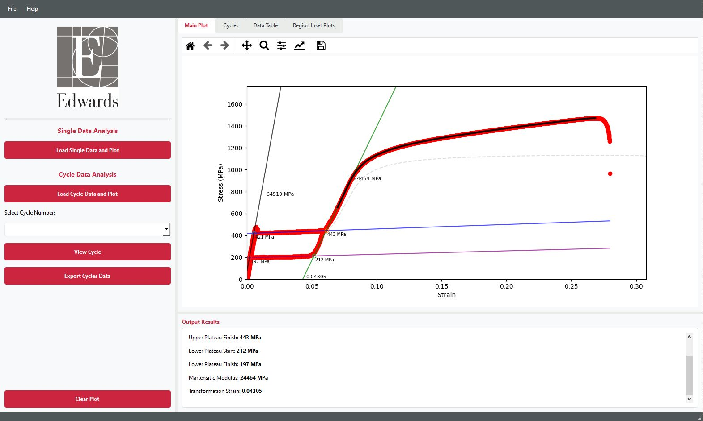
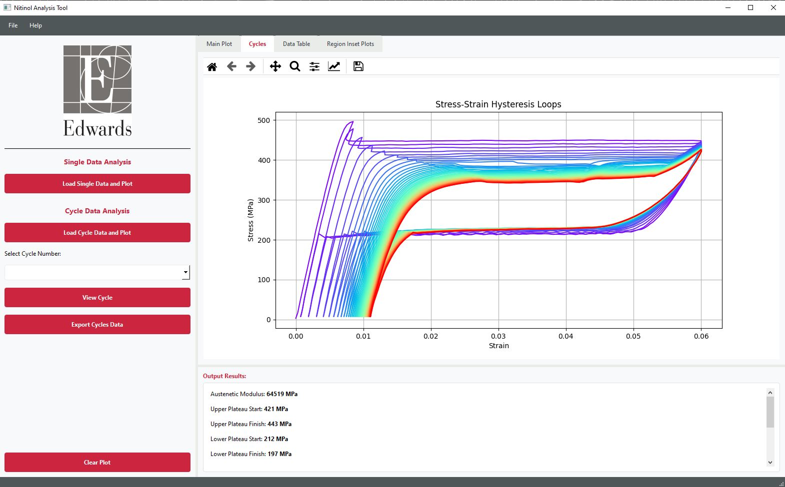
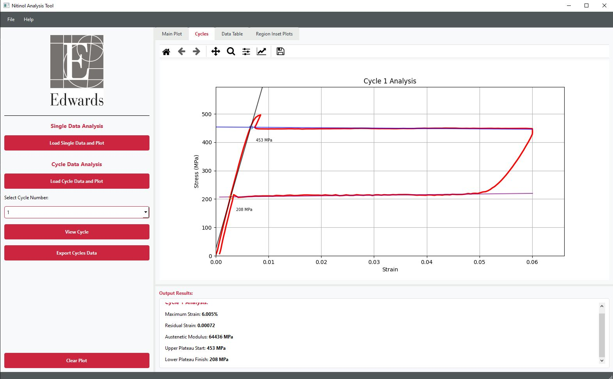

Nitinol Material Property Calibration App



Project Overview
This application was developed as a capstone project for Edwards Lifesciences, a leading medical device company specializing in heart valves and hemodynamic monitoring. The Nitinol Material Property Calibration App analyzes the stress-strain behavior of Nitinol alloy used in transcatheter heart valves.
The Challenge
Engineers at Edwards Lifesciences needed a tool to efficiently analyze raw experimental data from mechanical tests on Nitinol specimens. The key requirements were:
- Visualize mechanical properties of Nitinol alloy
- Identify and extract hysteresis loops from raw data
- Process and smooth noisy experimental data
- Export processed data for further analysis and simulation
- Create an intuitive interface for engineers to use without programming expertise
My Solution
I developed a desktop application using Python with PyQt for the GUI, Pandas for data processing, and Matplotlib for visualization. The application features:
- A clean, intuitive user interface allowing engineers to load, visualize, and process data
- Custom algorithms for data smoothing and cycle detection
- Interactive visualization of stress-strain curves with zoom and pan capabilities
- Automated identification and extraction of hysteresis loops
- Data export functionality in various formats for integration with simulation software
- Comprehensive error handling and user feedback mechanisms
Development Process
The project was completed over a 12-week period following these phases:
- Requirements Gathering: Met with engineers to understand their workflow and needs
- Data Understanding: Analyzed raw test data to understand its structure and challenges
- Prototype Development: Created an initial version with basic functionality
- Algorithm Development: Designed custom algorithms for data processing
- UI Implementation: Built the complete user interface with all necessary features
- Testing & Validation: Conducted thorough testing with real data and user feedback
- Documentation & Delivery: Created documentation and delivered the final product
Challenges & Solutions
Throughout the development process, I encountered and solved several challenges:
- Noisy Data: Implemented adaptive Savitzky-Golay filters to smooth data while preserving important features
- Hysteresis Loop Detection: Developed a custom algorithm that automatically identifies loading/unloading cycles
- Performance Optimization: Improved application responsiveness when handling large datasets through efficient data structures
- User Experience: Iteratively refined the interface based on user feedback to ensure intuitive operation
Lessons Learned
This project taught me valuable lessons about:
- The importance of early and continuous stakeholder involvement
- Balancing technical complexity with user experience
- Implementing effective error handling for scientific applications
- The value of thorough documentation for specialized tools